Space Mapping Using WR-Connect
Open this article in separate window to print
Currently, in the world of high-speed computers, there are many FEM solvers of EM problems that allow almost exact solution of Maxwell's equations in arbitrary shaped and inhomogeneously filled 3D objects. Almost any complex EM structure can be "drawn" and "simulated". Nevertheless, in most cases, such a complex structure cannot be directly synthesized based on RF performance targets. Direct application of optimization techniques to 3D solvers is also usually inefficient and time consuming. On the other hand, common synthesis methods are generally applicable to only simple electrical circuits consisting of lumped, distributed elements or coupling matrices that are not directly associated with a practical design concept. On the contrary, software built on the basis of such "coarse" models is very fast and easily implements synthesis and optimization methods. Therefore, design engineers often perform coarse modelling when developing a preliminary design concept and evaluating its expected performance. Problems arise when reproducing the technologically realistic (fine) model from the unrealistic coarse model. Microwave filter designers often follow empirical techniques to set identical couplings and resonant frequencies values when specific element sizes of the fine model are associated with corresponding lumped or distributed elements in the coarse model. In this case, these qualities (coupling or resonant frequency) are derived from full-wave simulations of some joints or nodes extracted from an fine model. Overall, this design procedure remains very cumbersome, time consuming, imprecise, and may not converge at all. The space mapping (SM) methods are developed to make a smooth and fast transition to the fine model from its coarse prototype. Due to the wide interest, there are currently many publications on methods of space mapping. But in general, these are iterative algorithms whose convergence depends on how accurate the coarse model simulates the reality. Generally, the convergence depends on the validity of the coarse model, its completeness and accuracy. If the coarse model is inaccurate or incomplete, then the SM process may require many iterations and not converge to any acceptable result. In our case, if we use the filter model from WR-Connect as a coarse model and use Ansys HFSS for fine modelling, then convergence is expected to be fast due to geometrical and electrical closeness of the both models. WR-Connect is provided with an "aggressive space mapping" (ASM) algorithm [1] that allows transfering and finalizing the WR-Connect design into another EM software, which is more accurate or more technologically detailed (for example includes draft angles, milling radii, tuning screws, etc.). This tutorial is about how to do this using a simple waveguide filter as an example.
The theoretical foundations of the aggressive space mapping method and the iterative algorithm itself are detailed in 15th chapter of this monograph [1]. Only the sequence of actions using WR-Connect is briefly described here. These actions can be described as follows:
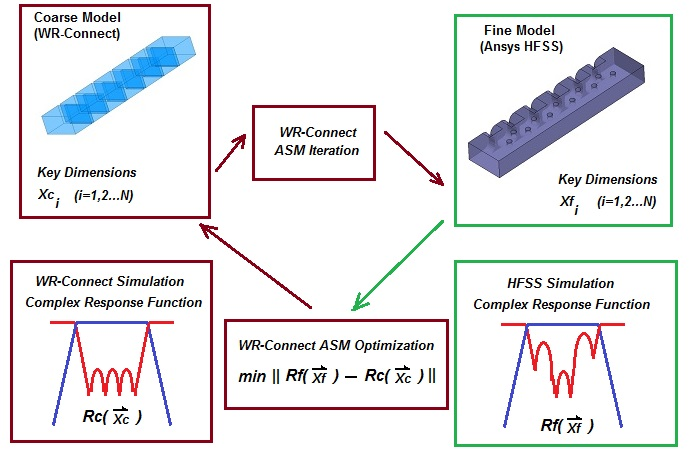
Figure 1: Simplified block diagram of the ASM process.
To begin with, we need to have an idealistic design concept that suits us from a technological point of view and meets our requirements. In our case, as an example, we will take some design from the previous tutorials, for example this one. There we have designed a simple waveguide iris filter (see Figure 2) using WR-Connect directly. It has been assumed that filter would be made in the simplest handicraft way by just soldering the irises to a waveguide tube.
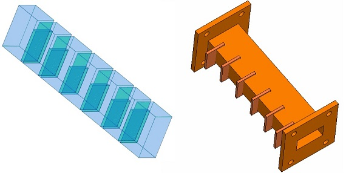
Figure 2: WR-75 iris filter 3D model (left) and its "handicraft" implementation (right).
Now we are returning to the idea to make that filter in a more technological way by using milling. In this case, we imagine that the filter will consist of two parts (body and cover). Both of these parts can be machined from aluminum blanks on a milling machine (see Figure 3). In this case, both the body and the cover will have holes for the fastening screws. Most waveguide filters and many other components are manufactured this way.
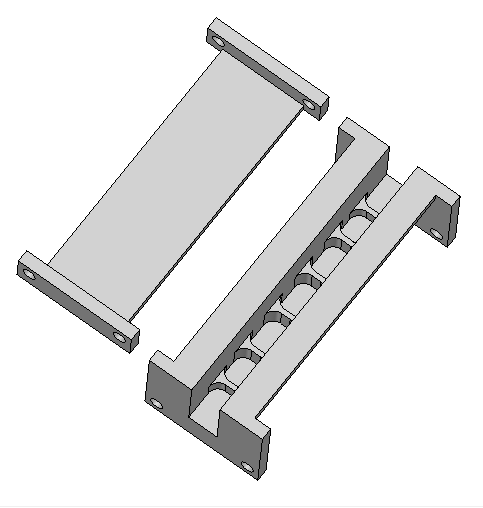
Figure 3: Housing and cover design proposed for milling.
At the same time, technologists always ask designers the same question, how much is permissible rounding of right angles in a particular design. The radius of such curvatures is usually associated with the diameter of the standard cutter that will be installed on the machine. In doing so, they usually say such things that the thicker the cutter, the faster the manufacturing process and the less likely the cutter to break in this process. Based on usual considerations, the minimum cutter diameter is selected based on considerations of one third of the depth of the milling cavity. Then, in our case, the minimum cutter diameter will be Dcut=0.75''/3 = 0.25''. If so, in our fine model (see Figure 4), we have to accept the fillets radii to be at least not lesser than R = 0.130''.
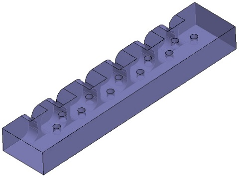
Figure 4: Fine model design concept in drawn in HFSS.
As a teaching purpose, we will also suggest using tuning screws (they may not be needed if the parts are accurately fabricated). So, in the HFSS model (see Figure 4), we round every corner between the iris and the exterior side wall and draw cylinders simulating the tuning screws. We will position these cylinders on the upper wall in the center of each cavity and iris window.
Setting the coarse model parameters for the ASM process is the same as in the case of regular (near-band performance) optimization with a few exceptions. First, the end nodes lengths must be included in the ASM optimization parameters (see Figure 5). In the case of simple waveguide filters, when the filter consists of N resonators and N + 1 couplings between them, the optimization variables should include N resonator sizes, N + 1 coupling sizes, and two end node sizes (2N + 3 variables in total). Secondly, optimization should take place over the entire 2x2 scattering matrix members (S11, S21 (S21=S12) and S22). Wherin, in most cases, the ASM optimization settings (Figure 6) could include just the targets for S11 and S22 magnitudes over the near-bands (entire passband with the nearest roll-off).
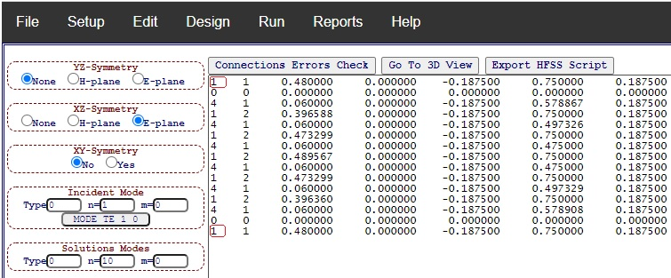
Figure 5: Lengths of end nodes (marked red)marked as optimization variables in dimensions list.
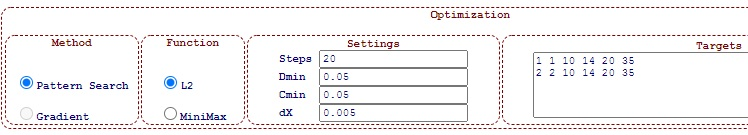
Figure 6: ASM optimization targets including both S11 and S22 magnitudes over near-band (10 to 14 GHz).
The fine model must be built in geometrical accordance with the coarse model and have the same forming dimensions (the dimensions of the resonators and coupling elements), but at the same time it may include different "perturbations" of the coarse model surface. With this filter as an example (see Figure 4), we intentionally added rounded corners (cutter radius) and small cylinders (tuning screws). The remaining dimensions of the structure (the size of the outer case, the length of the resonators, the thickness and width of the irises, etc.) are left unchanged.
In the WR Connect interface, each ASM iteration starts by importing the key dimensions (Xci, i=1,2..N) of the coarse model into the algorithm. This could be done by clicking "Import" (see Figure 7) button located on top row in the "Space Mapping" panel (at bottom-left corner of Schematic Editor page). When this button is pressed, the algorithm loads the dimensions of the coarse model from the schematic window.
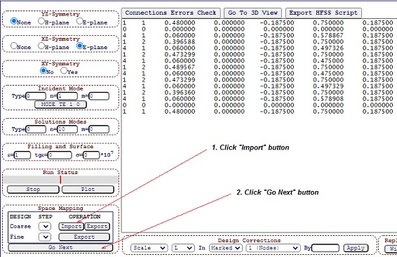
Figure 7: First iteration steps
Further, when the "Go Next" button is clicked, the algorithm calculates the key dimensions of the fine model and automatically displays them in the schematic editor. In this case, each iteration is stored in the buffer and is indicated by the corresponding "Coarse" and "Fine" indices. As a result, each set of coarse model dimensions Xc(n)i corresponds to a set of fine model dimensions Xf(n+1)i. However, in the case of the first iteration, the dimensions of the coarse and fine models are equal [1] (Xf(1)i=Xc(0)i).
Each time, after obtaining the dimensions of the fine model (step #2 in Figure 7), the structure with these dimensions is simulated using the same software that is chosen as the fine model simulator (in our example, we use Ansys HFSS). At the same time, data transfer from WR-Connect Design Editor (Figure 5) to the "fine" software is carried out by the user himself (see three options in section 1 above). After the simulation is completed, its results must be saved as either an s2p file or a text file listing the scattering matrix elements in order (frequency [GHz], Re(S11), Im(S11), Re(S21), Im(S21), Re(S12), Im(S12), Re(S22), Im(S22)) delimited by spaces or tabs.
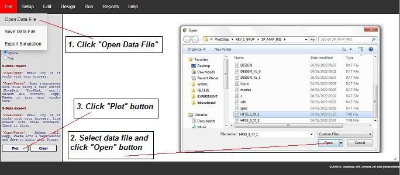
Figure 8: How to import external data file with s-parameters.
The next step is to import these s-parameters into WR-Connect (see Figure 8). To do so, we go to the External Data page (click the "Import/Export" option in the "Plot" menu) and follow instructions on Figure 8. The results of both simulations are displayed in Figure 9.
From the plots, it can be seen that the response of the fine model has lower return loss and is slightly lower in frequency. In this case, before ASM optimization, it is recommended to adjust the response of the coarse model so that it is more or less close to the response of the fine model (this will significantly reduce the optimization time).
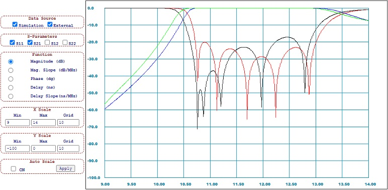
Figure 9: Reflection and transmission magnitudes (dB) versus frequency plots corresponding to coarse (WR-Connect) and fine (HFSS) models.
In order to shift the coarse model response down in frequency, one can simply increase length (variable #1 "L") of each filter resonator proportionally (cavity element #2). This can be done using the scaling method as shown in the steps shown on Figure 10.
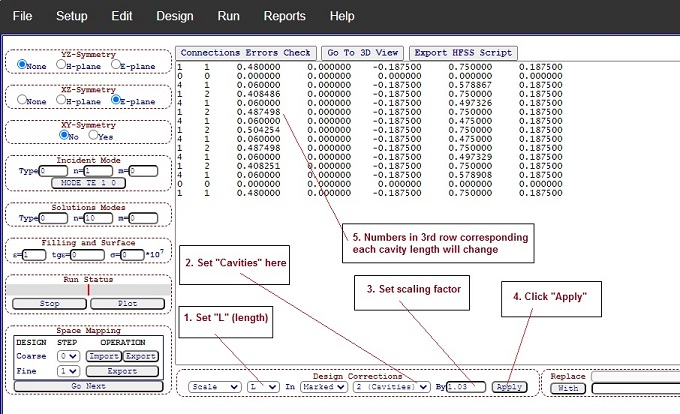
Figure 10: Steps how to increase each cavity length by 3% using "Scale" method in "Design Corrections" controls.
Consequently, after lengthening each node 2 by 3% and subsequent simulation, we have a more or less close arrangement of the two responses (Figure 11).
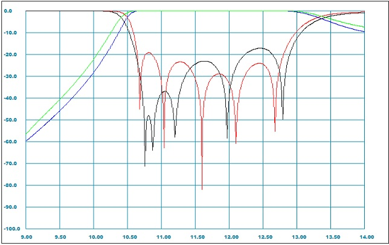
Figure 11: Reflection and transmission magnitudes (dB) versus frequency (GHz) plots corresponding to coarse (WR-Connect) and fine (HFSS) models after length of each cavity in coarse model increased 1.03 times.
The key step of the ASM iteration is to approach the response of the coarse model to that of the fine model. Ideally, all key dimensions of the coarse model should be corrected so that both responses to become the same in magnitude and phase. In practice, this does not work out due to the fact that the models themselves and the methods of their simulations are different. Nevertheless, the difference in s-parameters can be minimized using optimization techniques to a certain degree of suitability. WR-Connect is equipped with such an optimizer, which can be launched by selecting the "Run ASM Step" option from the "Run" menu. The optimizer type settings, goals, parameters and optimization criteria are almost the same as in the case of normal response optimization (refer to help and previous tutorials). Futhermore, using the optimizer settings (Figure 6) and the already corrected coarse model (Figure 10), we can run this function several times until both characteristics match completely or are very close (like shown on Figure 12).
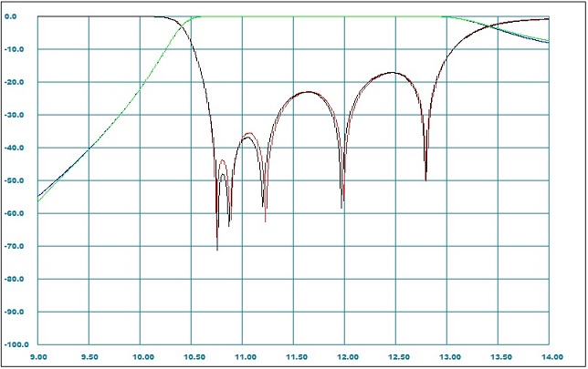
Figure 12: Reflection and transmission magnitudes (dB) versus frequency (GHz) plots corresponding to coarse (WR-Connect) and fine (HFSS) models after ASM optimization.
Once we have made sure that both responses almost coinside, we can return to the design editor and move on to the next iteration of the fine model, as we did in the case of the first iteration (see Figure 13). But in this case, the indeces of both models will increase by one (1 for the coarse and 2 for the fine model).
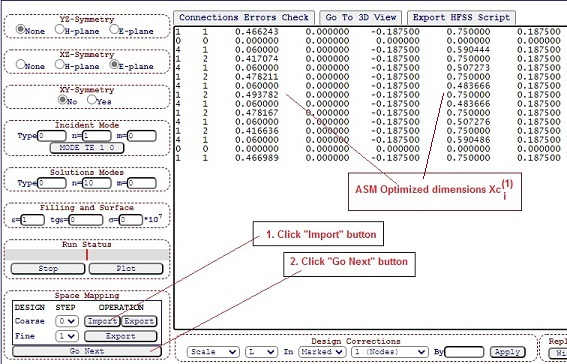
Figure 13: Screenshot of the Design Editor showing the dimensions Xc(1) corresponding to the coarse model when its responses match those of the fine model with dimensions Xf(1) and instructions on how to proceed to the second iteration.
After pressing the "Go Next" button (Figure 13), the algorithm will process the dimensions of the coarse model Xc(1)i and output the dimensions of the fine model of the next iteration Xf(2)i (Figure 14).
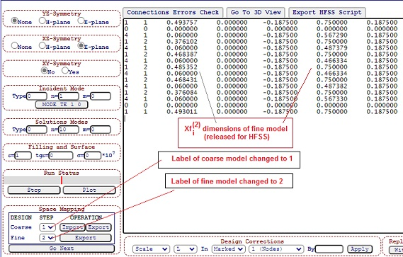
Figure 14: Screenshot of the Design Editor showing the dimensions Xf(2) corresponding to the next iteration of the fine model, which appeared after completing the steps shown above (Figure 13).
Now the ASM cycle repeats again. We again need to transfer these dimensions to the fine model simulator (HFSS used here) and obtain the . We again need to transfer these dimensions to the fine model simulator (HFSS is used here), run it and extract the updated s-parameters file.
This procedure can be repeated until the response of the fine model (Xf(n)) approaches the initial response of the coarse model (Xc(0)) good enough to be acceptable. In our case, already the second iteration leeds to an almost complete coincidence of the simulation of the fine model with the simulation of the initial coarse model, which is chosen as a target performance (see Figure 15).
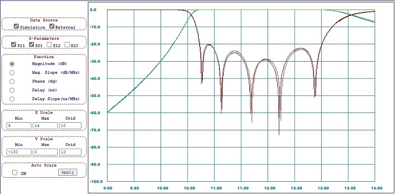
Figure 15: Reflection and transmission magnitudes (dB) versus frequency plots corresponding to the target coarse model (Xc(0) simulated using WR-Connect) and the second iteration fine model (Xf(2) simulated using HFSS).
[1] R. Cameron, C. M. Kudsia, R. R. Mansour, Microwave Filters for Communication Systems, Wiley, 2007